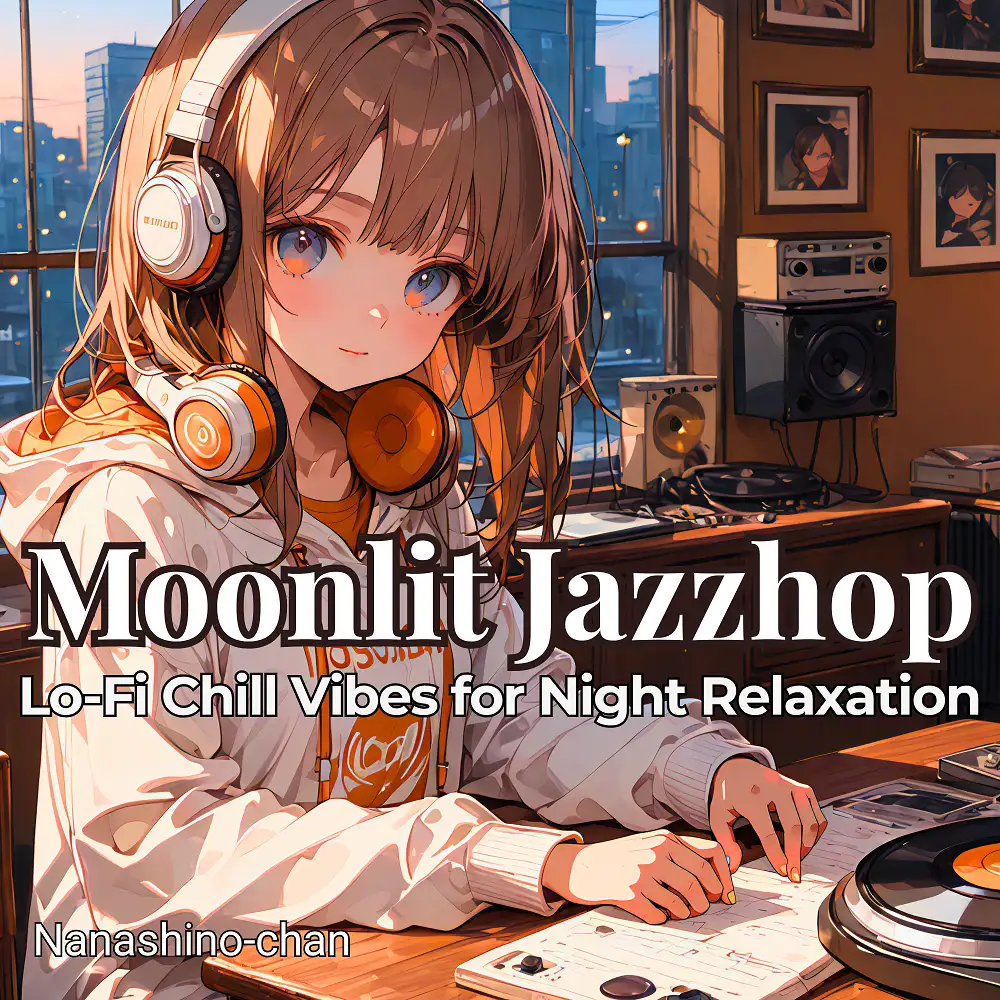

Lo-Fi · Jazzhop · Jazz
Moonlit Jazzhop : Lo-Fi Chill Vibes for Night Relaxation
Nanashino-chan
Explore Moonlit Jazzhop : Lo-Fi Chill Vibes for Night Relaxation by Nanashino-chan: 20 instrumental tracks spanning Lo-Fi / Jazzhop / Jazz. Start with Midnight Memories / Late Night Breeze, preview the collection and find your favorites on streaming services.
2025-10-24 · Released · 20 tracks · Instrumental
Preview the album
The jacket stays here until you choose a track. Playback uses YouTube.
YOUTUBE PREVIEW
Choose a track to listen
The jacket stays here until you choose a track. Playback uses YouTube.
If playback is unavailable, open the album or track on the streaming service.
Find this album on streaming services
Links marked “search” open search results. Select the album or track on the service.
Track list 20
- 01Midnight Memories
- 02Late Night Breeze
- 03Moonlit Serenade
- 04Calm Reflections
- 05Soft Velvet Nights
- 06Echoes of Serenity
- 07Whispers in the Dark
- 08Moonlit Melody
- 09Quiet Moment
- 10Deep Chill Dream
- 11Smooth Waves
- 12Tranquil Escape
- 13Midnight Sax Flow
- 14Restful Horizons
- 15Peaceful Vibes
- 16Gentle Piano Tones
- 17Soothed by the Stars
- 18Nightfall Serenade
- 19Calm Vibes
- 20Closing Calm
Find a sound for your next post
Copy “Nanashino-chan + track title” and paste it into your social app’s music search. Availability depends on your region and account. Copying the name does not grant usage rights.